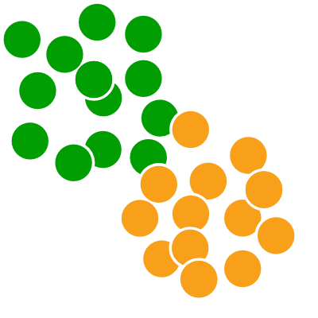

The Racmacs package provides a toolkit for making antigenic maps from assay data such as HI assays, as described in Smith et al. 2004.
For a general introduction to using Racmacs to make an antigenic map from titer data see the article “Making an antigenic map from titer data”. For documentation of the functions available see the reference section.
Installation instructions
Install the devtools package
If not already installed, install the devtools package, this provides functions to help with installation.
install.packages("devtools")
Install acmacs.r
acmacs.r is the underlying package on which Racmacs is built. While Racmacs adds a lot of additional functionality of its own, all the underlying optimization routines for making the maps are contained within acmacs.r. Unfortunately there is currently no version for windows but mac and linux versions are available. Depending upon your operating system run one of the commands below.
# Mac remotes::install_url("https://github.com/acorg/acmacs.r/releases/download/v4.6/acmacs.r_4.6_R_macOS-10.14.tgz", build = FALSE) # Linux remotes::install_url("https://github.com/acorg/acmacs.r/releases/download/v4.5/acmacs.r_4.5_R_x86_64-pc-linux-gnu.tar.gz", build = FALSE)
Install Racmacs
Now you can install Racmacs directly from the latest development source code. In future pre-built binary versions will also be included.
# To build from github source devtools::install_github("acorg/Racmacs")